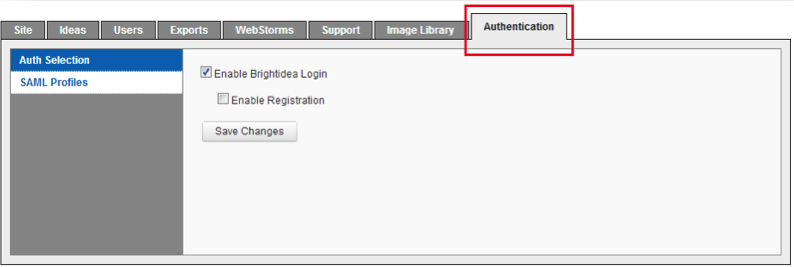
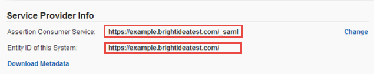
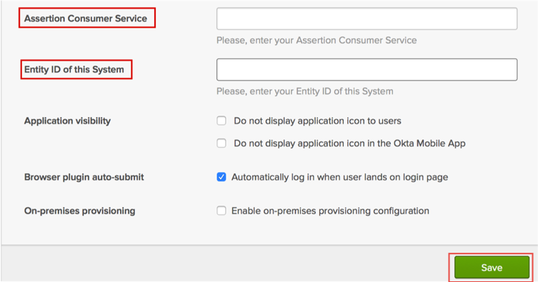
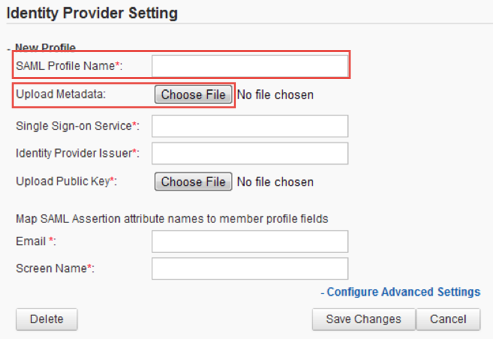
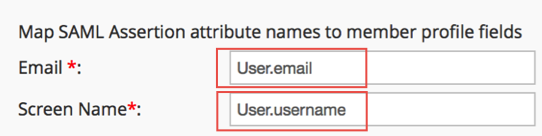
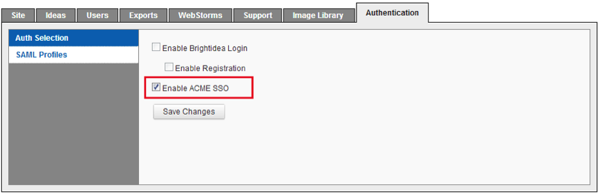

In your Brightidea system, navigate to Enterprise Setup > Authentication.

Select the SAML Profiles tab on the left.
Make a copy of the values from the Assertion Consumer Service and Entity ID of this System fields.

In Okta, select the General tab for the Brightidea app and enter the values you just saved into the Assertion Customer Service and Entity ID of this System fields.

Click Save.
In the Brightidea Identity Provider Setting section, enter the following (see screen shot at end of step for reference):
SAML Profile Name: Enter a name.
Upload Metadata: Save the following to file, then use Choose File to select and upload here.
Uploading the metadata file will autopopulate the following fields:
Single Sign-on Service
Identify Provider Issuer
Public Key

For the following fields, enter the name of the attributes used in your SAML response:
Screen Name

Click Save Changes.
In your Brightidea system, navigate to Enterprise Setup > Authentication then select the Auth Selection tab. Make sure the SSO login option is selected, then click Save Changes. This will disable the regular Brightidea login method, and allow user access through SSO only.

Done!
Notes:
IdP-initiated flows, SP-initiated flows, and Just In Time (JIT) provisioning are all supported.
For SP-initiated flows, use your regular login URL.